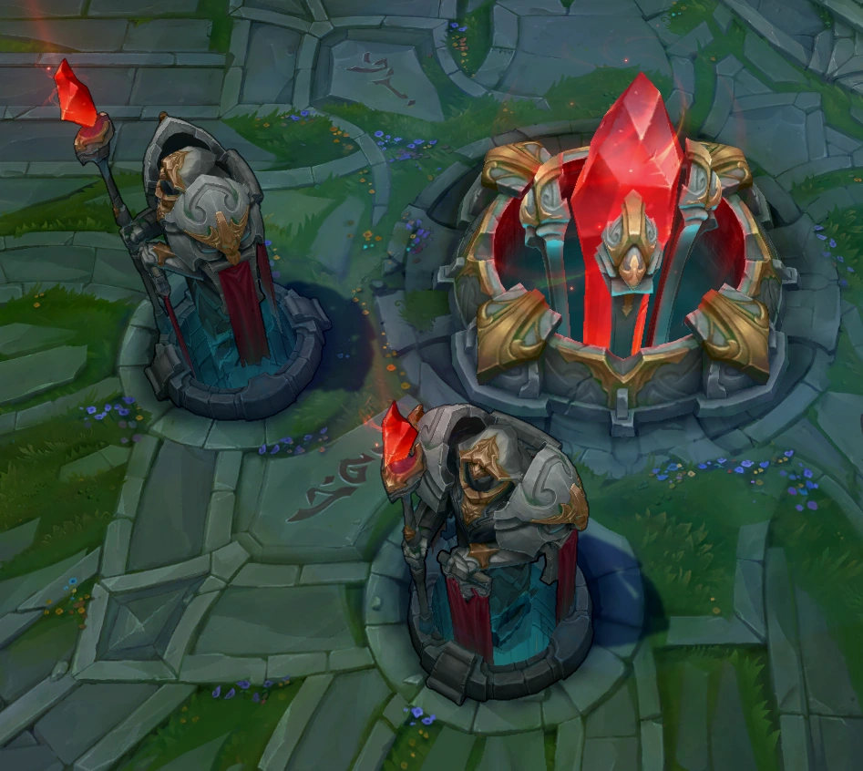

Pagina 5
LETRA N
En esta página encontraremos las palabras más comunes para la letra N.
1. Nación: Conjunto de personas de un mismo origen.
2. Navegante: Persona encargada de la navegación marítima y cometidos varios en el barco.
3. Nexo: Responsable de que los súbditos aparezcan.

4. Nórdico: Población germánica de Escandinavia en el norte de Europa.
5. Nuclear: Relativo a la energía producida por reacciones atómicas de fusión o fisión.